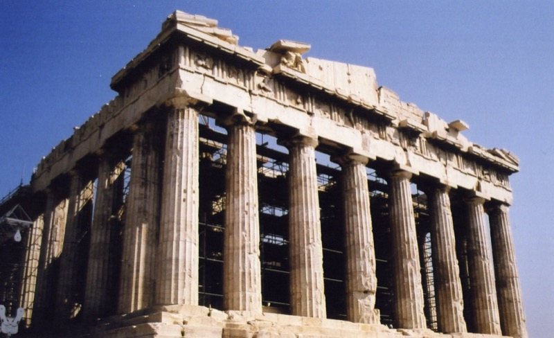

~800 – 146 P.N.E. • KOLIJEVKA DEMOKRATIJE
Nikada jedan narod nije imao toliko uticaja na civilizaciju nesrazmerno svojoj veličini. Stara Grčka nikada nije bila jedinstvena država — bila je mozaik međusobno zaraćenih gradova-država koji su se cepa između suparništva i saradnje. Iz te tenzije izniklo je sve što i danas gradimo: demokratija, filozofija, pozorište, olimpijske igre, medicina, geometrija. Mi još uvek živimo u svetu koji su Grci zamislili.

Stara Grčka — gradovi-države i kolonije po Mediteranu • Wikimedia Commons